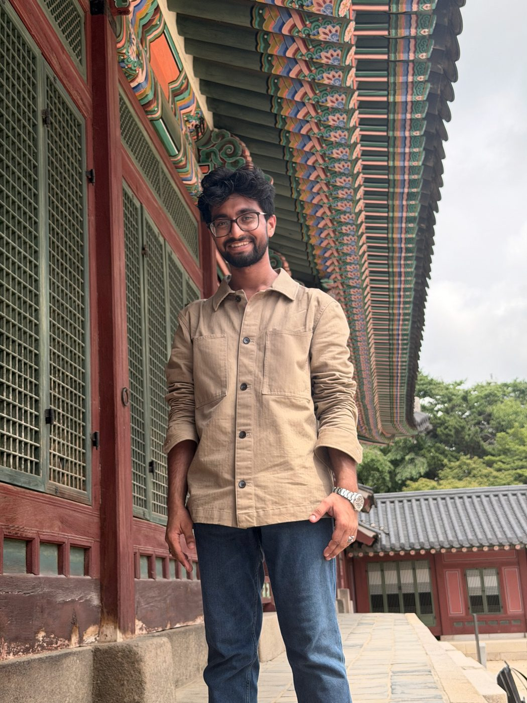
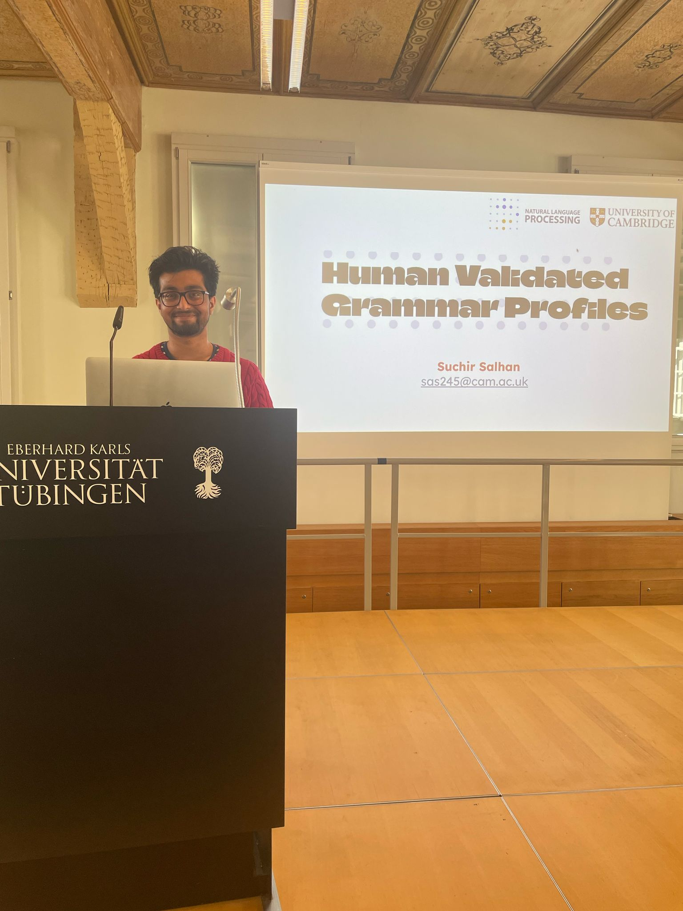
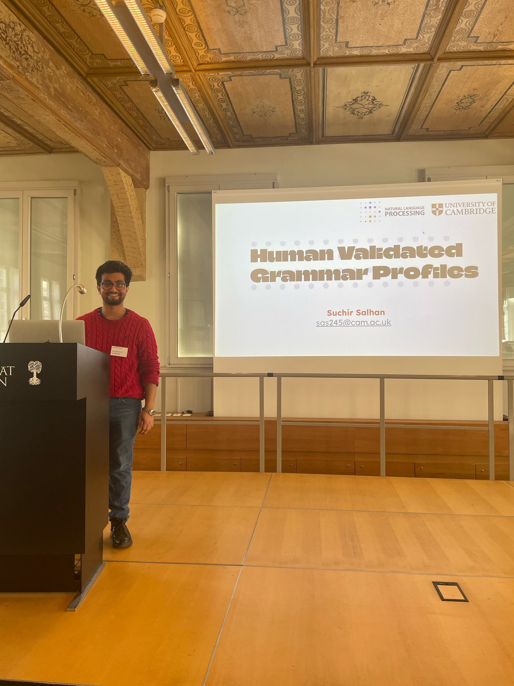

Short Bio
I am a PhD Candidate in Computer Science at the University of Cambridge (Gonville & Caius College), working across artificial intelligence, cognitive science and linguistics to understand how intelligent systems learn. I study Machine Learning and Natural Language Processing under Professor Paula Buttery, asking how the same question of learning connects human minds and machines, language and intelligence, cognition and computation.
I previously completed my Bachelor of Arts and Masters in Engineering in Computer Science and Linguistics at Gonville & Caius College, University of Cambridge, obtaining a Starred First (Class I with Distinction) and a Distinction respectively. My research focuses on Small-Scale Language Models to improve the interpretability of Foundation Models.
Outside of academia, I lead a publication called Per Capita Media, Cambridge University's newest independent publication. My journalistic work includes collaborations with The One Show and interactions with The Sunday Times and BBC Radio 5 Live.
I am also involved in student policy think tanks, as the Head of Policy at The Wilberforce Society, and organise speaker events throughout the University. A copy of my CV can be found on my Department Page (Computer Science & Technology).

Conferences, teaching and travel
Featured talk
Understanding the Human-Scale AI Frontier: Sample-Efficient and Human-Scale Language Modelling
In contemporary AI systems, “human-like” capabilities emerge at scales far beyond what is human-scale. This talk argues that the sample-efficiency of neural models is an important — though often overlooked — frontier goal for AI, and secondarily raises interesting questions for cognitive science. We survey community-wide efforts to understand and advance the human-scale AI frontier in the NLP community through the BabyLM Challenge, and in the wider ML community (e.g. through OpenAI’s Parameter Golf and the NanoGPT Speedrunning challenges).
Collectively, these efforts highlight the importance of learning dynamics for building better-performing smaller language models. I present work on multilingual learning dynamics in the Multilingual BabyLM Challenge (EMNLP 2026) and a new multilingual learning-dynamics framework, Beetle, which I have been developing. I conclude with thoughts on challenging and promising directions: developing better input representations, and the challenges of modality and multi-agent learning.
Suchir is a PhD candidate in the Computer Science Department at the University of Cambridge, working on the Science of Language Modelling. He builds new sample efficient AI systems. Suchir organises international BabyLM and BabyVLM workshops at top AI conferences and, to date, has won two outstanding paper awards and two oral awards for his research.
I am a PhD Candidate in Computer Science at the University of Cambridge (Gonville & Caius College), working across artificial intelligence, cognitive science and linguistics to understand how intelligent systems learn. I study Machine Learning and Natural Language Processing under Professor Paula Buttery, asking how the same question of learning connects human minds and machines, language and intelligence, cognition and computation.
I previously completed my Bachelor of Arts and Masters in Engineering in Computer Science and Linguistics at Gonville & Caius College, University of Cambridge, obtaining a Starred First (Class I with Distinction) and a Distinction respectively. My research focuses on Small-Scale Language Models to improve the interpretability of Foundation Models.
Outside of academia, I lead a publication called Per Capita Media, Cambridge University's newest independent publication. My journalistic work includes collaborations with The One Show and interactions with The Sunday Times and BBC Radio 5 Live.
I am also involved in student policy think tanks, as the Head of Policy at The Wilberforce Society, and organise speaker events throughout the University. A copy of my CV can be found on my Department Page (Computer Science & Technology).
Latest slides and posters
- Slides: Beetle (EMNLP 2026) · LangMAP (EMNLP 2026) · Open bilingual model suite, CUP&A (.pptx)
- Posters: Beetle · LangMAP · Protocol Competence · Claude Reinvestigates Herself · Linear Truth Encodings · Shared Units, Divergent Trajectories (all EMNLP 2026)
- All talks, slides and posters
Writing, Media & Public Thought
Alongside academic research, I am involved in long-form writing and editorial work. I am the Editor of Per Capita Media.
My journalistic work has included collaborations with The One Show, The Sunday Times, and BBC Radio 5 Live.
Travel
I travel a lot! Recently, I've spent time in China, San Diego, Vancouver, Vienna, Paris, and Germany – it's always a lot of fun meeting new researchers, trying new food, and exploring new cities.


Beyond Research
I enjoy film, music and reading, as a way to keep learning about new languages and culture. I've also had a long-standing interest in classical languages.
Somewhat related to my own interests in politics and journalism, I run a Media & Journalism Society in my college. I am also MCR Treasurer.
Get in touch
I welcome inquiries related to my research, and am happy to discuss projects with current or prospective students.